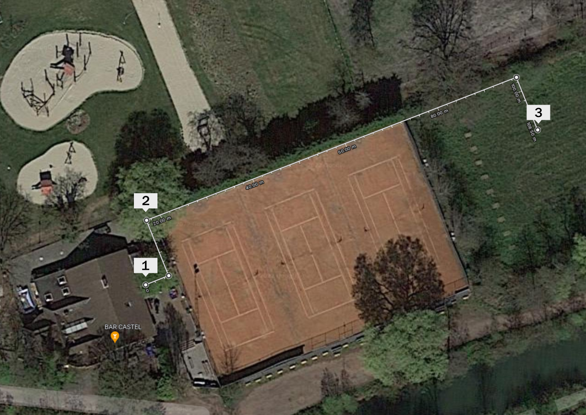

Kooike Netwerk
-
Aansluiting BBQ's
- Switch (POE? 3-4 poorten)
- Ethernet Surge Protector
- 1 Ethernet kabel naar bestaand WiFi Access Point
- 1 Ethernet kabel naar punt 2 (materiaalhok)
-
Materiaalhok
- Switch (3-4 poorten)
- 1 Ethernet kabel naar punt 3 (kast padel)
-
Kast Padel
- Switch (met extra poorten reserve voor uitbreiding en camera's)
- WiFi AP(?)
- Ethernet Surge Protector
- 1 Ethernet kabel tussen switch en WiFi AP
- 1 Ethernet kabel naar poort 1
- 1 Ethernet kabel naar poort 2
Benodigdheden
| # | Beschrijving | Locatie | Prijs |
|---|---|---|---|
| 30 | Shielded RJ45 Pluggen | 1, 2, 3 | € 18 |
| 3 | Soepele UTP kabel 15cm | 1, 3 | € 18 |
| 3 | Shielded FTP kabel 3m | 3 | € 15 |
| 3 | Switch | 1, 2 | € 39 |
| 1 | WiFi Access Point | 3 | € 120 |
| 2 | Ethernet Surge Protector | 1, 3 | € 40 |
| 1 | ± 55 meter pechelbuis (lengte eerste 3 tennisvelden) | ||
| 1 | ± 80 meter beschermbuis (goot terras + stuk vanaf veld 3 tot kast padel → poortje padelveld 3) | ||
| € 250 |